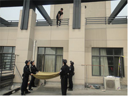
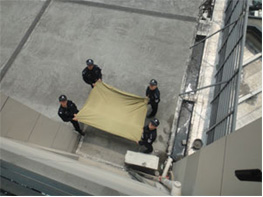
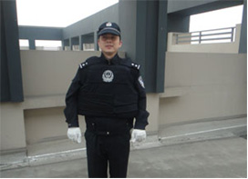
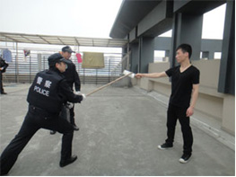

杭州市公安机关处置扬言自杀警情标准操作程序
一、职责分工
(一)一般扬言自杀警情由属地派出所为主处置，重大复杂自杀警情由属地公安分、县（市）局处置。
各公安分、县（市）局应积极培养心理危机干预人员，建立扬言自杀干预兼职队伍。
(二)指挥中心负责调度属地公安机关、市局相关业务警种处置扬言自杀警情，协调卫生、劳动监察、供电、供气等相关部门启动社会联动机制。
(三)市、区（县、市）两级消防、特警、刑侦、治安、水警等警种协助属地公安机关处置。
(四)市局行动技术支队、网络警察分局为属地公安机关处置工作提供相关技术支撑。
(五)交警部门负责对扬言自杀警情现场及周边道路交通管控。
二、基本要求
接警
(一)接警时快速问明扬言自杀警情发生的地点、方式、原因、行为人的基本情况，警情发生在公共场所的问明围观情况。
(二)行为人本人报警的，应问明其身份和扬言自杀的地点、方式、原因，耐心倾听、积极开导，设法延长通话时间，为处警人员赢得处置时间。行为人不愿透露身份、所处地点等信息的，由指挥中心指令行动技术支队、网络警察分局查明相关信息。
(三)指令属地公安机关赶赴现场处置（警情发生在重点敏感区域或者现场已有大量人员围观的，应要求属地公安机关加强处置警力），视情指令消防、特警、水警等到场协同处置。
(四)通知120急救中心，视情启动110社会联动机制。
现场处置
(五)属地派出所接到指令后，值班所领导应立即赶赴现场，负责组织指挥处置工作。对于发生在党、政、军驻地或城市标志性建筑等重点敏感部位和加油站、液化气站等危险部位的扬言自杀警情，以及其他重大复杂的扬言自杀警情，分、县（市）局值班局领导应迅速赶赴现场负责统一指挥。
(六)处警单位应根据扬言自杀警情的不同情形，携带所需装备，为处置工作做好准备。
(七)到达现场后，应首先判明警情的真实性及可能造成的后果，及时将情况报告指挥中心。对于找不到报警人和行为人的警情，按照《杭州市公安机关处置情况不明的“救命”警情标准操作程序》处置。
(八)指挥员根据现场情况对警力进行合理分工，积极开展救援工作。需要启动110社会联动机制或者需要相关专业警种协同处置的，及时向指挥中心发出请求。
(九)现场警力一般分为警戒组、劝说组、营救组、调查组，警力不足时应当优先开展营救工作。
1、警戒组：一是合理划定警戒区域。室外现场的警戒区域尽可能扩大至行为人无法听见围观群众发出的声音为宜。室内现场警戒区为事发地周边区域，守住进出口阻止无关人员出入。二是劝离、疏散现场无关人员。围观群众起哄、喧闹应及时劝阻，避免进一步刺激行为人。三是协助交警对附近道路交通进行疏导管控，确保救援车辆进出顺畅。
2、劝说组：选派兼职心理危机干预人员或者善于沟通的民警开展劝说工作。一是尽快与行为人搭建沟通渠道，详细了解行为人扬言自杀原因及其社会关系。二是劝说过程中避免刺激行为人，适时向行为人提供矿泉水、香烟等缓解其焦虑情绪。对于行为人提出的要求应视情满足（但对营救行动起反作用的除外），无法或不宜满足的应以恰当的理由婉拒，防止恶化行为人情绪。三是视情会同有关职能部门工作人员、行为人亲友或其他有关人员一起劝说。四是对以扬言自杀为要挟满足个人诉求的行为人，可以采取“你的要求可以商量”等模糊回答的方式予以冷处理。五是确实无法劝服的，可设法分散行为人的注意力，在确保行为人和自身安全的条件下进行直接营救。
3、营救组：一是设法靠近（如以递水、递烟为由靠近或从背后贴靠）行为人，选择有利方式伺机营救。二是一旦行为人放弃自杀念头时要抓住时机，快速帮其脱离险境。三是营救成功后应加强看护。四是营救过程须特别注意自身和行为人的安全。五是行为人一旦实施自杀行为应果断采取施救措施。
4、调查组：一是走访知情人，了解行为人的身份和扬言自杀的原因。二是及时联系、寻找、动员行为人亲友参与劝说。对于因情感、薪资等纠纷引起的扬言自杀警情，及时与涉事人员或相关单位责任人商议对策。三是搜索现场是否留有遗书、遗言录音等资料，及时拍照固定和提取。四是将调查过程中获取的有价值信息及时报告现场指挥员。
(十)现场有媒体介入的，按照《杭州市公安机关案(事)件现场媒体引导标准操作程序》处置。
后续处置
(十一)营救成功后，应将行为人交由其亲友或单位领回，无法找到其亲友或单位的应妥善安置，继续开展心理疏导工作或联系心理医生介入。
行为人为解决个人诉求或达到其他不法目的而故意扬言自杀扰乱公共秩序的，应依法处理。确因身体疾病、生活困难等原因扬言自杀的，一般不予处罚。
(十二)行为人已经实施自杀行为的，立即开展现场急救或交由医护人员处理。行为人已经死亡的，按照《杭州市公安机关处置不明原因死亡警情操作规范》处置。
(十三)扬言自杀警情产生社会不稳定因素的，应及时报告上级公安机关和政府相关职能部门，及时落实疏导、化解措施，防止引发群体性事件。
三、敏感和危险部位扬言自杀警情处置
敏感和危险部位是指各级政府驻地、广场、城市标志性建筑以及加油站、液化气站等可能因自杀行为危害公共安全、造成重大社会影响的区域、部位。各分、县（市）局应结合实际划定本辖区的敏感危险区域、部位，有针对性地制定处置敏感危险部位扬言自杀警情预案。
(一)合理确定警戒区域（警戒范围以避免群众聚集围观、摄像拍照为宜，可设置多道警戒圈），调派足够的警力清理无关人员，维持现场秩序。视情由交警部门对周边道路实施临时限行措施。
(二)行为人持有横幅、扩音器等工具的，应结合营救工作，劝说其放弃使用，尽力缩小扬言自杀造成的负面影响。
(三)及时掌握到场采访媒体等相关信息，按《杭州市公安机关案（事）件现场媒体引导标准操作程序》，做好现场媒体的管理、沟通工作，防止引发负面舆情危机。
(四)处置过程应全程录音录像。
四、网络扬言自杀警情处置
(一)接到网络扬言自杀警情时，应问明行为人所利用的网络平台（论坛、博客、微博、QQ等聊天工具）、行为人和报警人的ID、昵称、帐号以及扬言自杀的方式等信息。
(二)市局指挥中心指令网络警察分局、行动技术支队迅速查明行为人所处位置、具体身份、社会关系人等情况。
(三)网络警察分局、行动技术支队未能直接查明行为人所处位置的，处警单位应通过行为人的身份登记信息查明其常住、暂住地址并上门查找，设法尽快找到行为人所在处所及社会关系人。
(四)处警单位应积极与行为人搭建网络沟通平台，了解有关信息，劝说行为人放弃自杀念头。
(五)查明行为人所处位置后，若行为人独处封闭室内的，在无法联系或沟通无效的情况下，现场指挥员可决定采取破门、技术开锁等方式入室营救，并将施救决定及方式向指挥中心报备。
五、扬言坠跳自杀警情处置
(一)接到行为人攀爬高层建筑、天桥、塔吊等扬言坠跳警情后，即通知消防部门携带充气垫等装备到场协助营救。对发生在交通要道周边的扬言自杀警情，指令交警部门到场疏导、管控交通。
(二)及时与行为人沟通，诱导其离开危险位置，防止因体力不支而坠落。行为人处于塔顶等不易靠近的位置，可用扩音器喊话或借助手机等进行对话。
(三)做好应急准备，在行为人可能坠落处铺设充气垫，来不及或无法铺设气垫的，可就地取材使用棉被、网状物等架设缓冲层。
 
情况紧急时可就地取材架设缓冲层
(四)营救组与劝说组积极配合，可借助递烟、递水时伺机营救。营救人员应注意自身及行为人安全，防止被行为人抱、拉而发生意外。
(五)行为人扬言采用跳水方式自杀的，通知水警部门等参与救援；已经跳水的，参照《杭州市公安机关处置溺水警情操作规范》处置。
六、扬言持刀自杀警情处置
(一)处警人员应携带防刺服、防割手套、防暴头盔、盾牌、钢叉等装备迅速赶赴现场，必要时通知特警部门协助。
(二)劝说组与营救组人员应提前穿戴防刺背心、防割手套等防护装备，防止施救过程中因行为人反抗而发生意外。

穿戴防刺背心、防割手套等防护装备
(三)营救时，劝说组负责吸引行为人注意力，营救组伺机夺取刀具。无法靠近行为人时，可使用警棍或就地取材使用棍棒、皮带等物品，趁行为人不备时击打其手腕、前臂或直接打落刀具（打落刀具时应注意用力方向，我市曾发生过因击打刀背导致割脉自杀行为人肌腱断裂的案例）。

用棍棒等击落行为人手中的刀具
(四)已经实施自杀行为的，立即采取止血措施或交120救护人员处理。
七、扬言服毒自杀警情处置
(一)接警时须问明是否已经服毒以及所服毒物名称、数量、服食时间等，通知120急救中心。
(二)对于尚未服毒的，应进行劝说，伺机接近，借机夺取毒物。
(三)对于已服毒的，开展以下工作：
1、直接送医院抢救或交120救护人员处理。因路途偏远等原因无法及时交由救护人员的，可采取催吐，灌服大量豆浆、牛奶、生鸡蛋等急救措施。
2、向周边知情人了解毒物名称、数量、服食时间、自杀原因等情况。
3、保护现场，查找毒物的包装物及残渣，发现后拍照固定并原位保护，不得直接用手接触毒物及行为人血液、体液、呕吐物等物品。
4、将毒物种类告知医疗救护人员，便于救护人员正确救护。无法确定毒物种类的，可以提取部分毒物或呕吐物交由医护人员。
八、扬言使用易燃易爆物品自杀警情处置
行为人持有杀伤力较大的爆炸物品扬言自杀的，按照《杭州市公安机关涉爆现场处置标准操作程序》的要求处置。行为人欲在室内采取释放有毒、可燃、易爆气体实施自杀的，参照《杭州市公安机关处置常见救助警情标准操作程序》“住宅内燃气泄露”章节的要求处置。行为人欲采用泼油焚烧等方式实施自杀的，按照以下要求处置：
(一)立即通知消防部门到场。
(二)处警单位应当携带防爆毯、灭火毯、灭火器等装备火速赶赴现场，及时划定警戒区域、疏散围观人员、移除现场周边易燃易爆等危险物品。
(三)营救人员在做好自身防护的情况下，借机靠拢、果断施救，迅速将行为人与点火装置、可燃物予以隔绝。